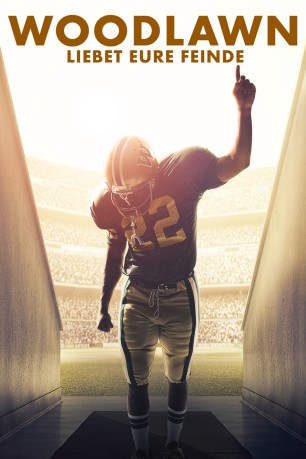
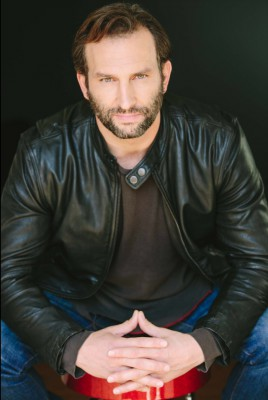

#7144 Woodlawn - Liebet eure Feinde
 
 IMDB-Wertung: 6.5 / 10
IMDB-Wertung: 6.5 / 10  Metascore: 0
Metascore: 0 
1973 in Amerika: Tony Nathan, ein afroamerikanischer Football-Spieler, wird in das Woodlawn High-School-Team von Birmingham, Alabama aufgenommen. Mit der Integration mehrerer afroamerikanischer Schüler setzt der Trainer Tandy Gerelds ein Zeichen gegen den vorherrschenden Rassismus und Hass, der nicht nur in der Schule, sondern im ganzen Land verbreitet ist und sich in Aufständen und Unruhen entlädt. Dabei bildet das Football-Team der Schule einen Mikrokosmos, der die vorherrschenden Probleme im Kleinen aufzeigt. Denn auch hier stehen Intoleranz und Unverständnis an der Tagesordnung. Als der Außenseiter Hank, der sich intensiv mit dem christlichen Glauben auseinandergesetzt hat, von Trainer Gerelds die Erlaubnis erhält, vor der Mannschaft zu sprechen, gelingt es ihm, die Botschaft von Akzeptanz und Nächstenliebe weiterzugeben und seine Team-Kollegen zum Umdenken zu bewegen.
Jahr: 2015
Dauer: 123 Minuten
FSK: 6
Land: USA Studio: PureFlix CinemaTonspuren: DTS - ,
Untertitel: Deutsch,
Auflösung: 1080p (1920x800) Größe: 8222 MB
Genre: Drama, Sport
Regisseur: Andrew Erwin, Jon Erwin
Drehbuch: Jon Erwin
Soundtrack:
Darsteller:
 Sean Astin als Hank Erwin
Sean Astin als Hank Erwin- Nic Bishop als Tandy Gerelds
- Caleb Castille als Tony Nathan
 Sherri Shepherd als Momma Nathan
Sherri Shepherd als Momma Nathan Jon Voight als Paul Bryant
Jon Voight als Paul Bryant- Joy Brunson als Johnnie
 Lance E. Nichols als Junior
Lance E. Nichols als Junior- DeVon Franklin als Preacher
 C. Thomas Howell als Shorty
C. Thomas Howell als Shorty-  Kevin Sizemore als Jerry Stearns
 Brett Rice als Whitehurst
Brett Rice als Whitehurst- Virginia Williams als Debbie
 Brando Eaton als Morton
Brando Eaton als Morton Richard Kohnke als Jeff Rutledge
Richard Kohnke als Jeff Rutledge Jet Jurgensmeyer als Todd
Jet Jurgensmeyer als Todd Kirk B.R. Woller als Owen Davis
Kirk B.R. Woller als Owen Davis Marcus Henderson als Reginald
Marcus Henderson als Reginald- Blake Burgess als Mike Allyson
- Carlton Byrd als Malik
- Vernard 'Bone' Hampton als Barber
- Dan Vaughan als Linebacker
- Devin Bright als Cedric
 Steven Chester Prince als Bull
Steven Chester Prince als Bull Danny Vinson als Banks Asst. Coach
Danny Vinson als Banks Asst. Coach Ron Flagge als Johnnie's Dad
Ron Flagge als Johnnie's Dad- Kevin Downes als Birmingham Reporter
- Harry Alexander als Wales
 Rhoda Griffis als Brenda Howly
Rhoda Griffis als Brenda Howly Jason Burkey als Insurance Customer
Jason Burkey als Insurance Customer- Jeff Rose als Sports Illustrated Reporter
- Kelly Greyson als Shelia
- David Kloehr als Young Fan
 Lee Perkins als USC Coach John McKay
Lee Perkins als USC Coach John McKay- Reginald Green als Barbershop Patron
- Emmaleigh Bailey als Football Fan , uncredited
- Peter Charnock als Woodlawn Football Player , uncredited
- Doris Collier als Game Fan , uncredited
- Jeremy Grimsley als Chain Gang , uncredited
- Ricky Jordan als Malik's Goon , uncredited
- Joe W. Lacey als Woodlawn Fan , uncredited
- Kelly Layne als Jeff Rutledge's Mother , uncredited
- Luke Partridge als Racist Boy , uncredited
- Austin Pollard als Woodlawn Player , uncredited
- Chris Setticase als Football Player , uncredited
- Joseph Setticase als Football Player , uncredited
- Farris Turner als Banks Cheerleader , uncredited
- Rachel Marie Wilson als Woodlawn Fan , uncredited
- Francesca Battistelli als Linda
- Keith Loy als Ref
- James Vines als Team Doctor
Datei: X:\2015(N-Z)\Woodlawn - Liebet eure Feinde (2015, FSK6, 1920x800).mkv seit 29.09.2017
Festplatte: HD 2015(A-Z)
 Es gibt insgesamt 161 Filme in der Gruppe '2015(N-Z)'
Es gibt insgesamt 161 Filme in der Gruppe '2015(N-Z)'